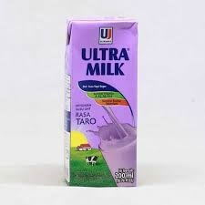
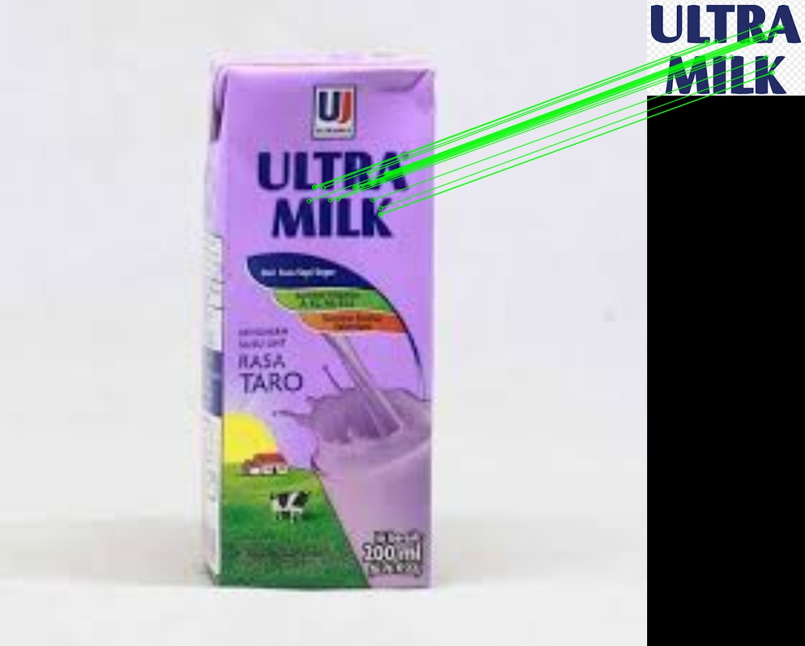
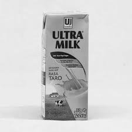
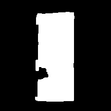
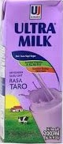
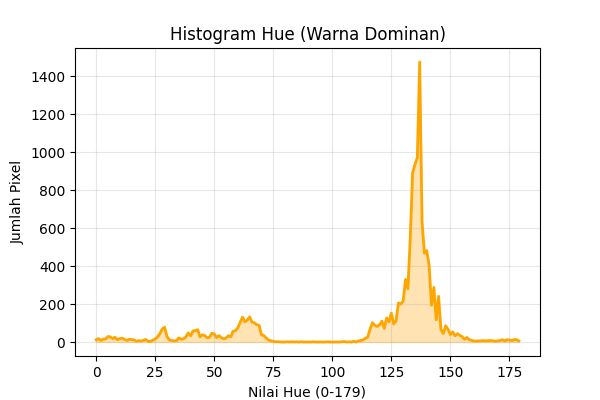
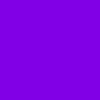

Laporan Analisis Citra Digital
Laporan ini digenerate secara otomatis oleh sistem Python OpenCV
1
Input Gambar Asli
Memuat gambar input dalam format RGB.

- Dimensi: 225x225 px
2
Deteksi Merk (Feature Matching)
Mencocokkan fitur unik pada gambar asli dengan database logo menggunakan ORB + RANSAC.

- Merk Terdeteksi: ULTRAMILK
- Info: Inliers Tertinggi: 20
| Logo Database | Raw Match | Inliers (Final) | Status |
|---|---|---|---|
| ULTRAMILK.png | 51 | 20 | Valid Match |
| GREENFIELDS.png | 23 | 7 | Valid Match |
3
Konversi Grayscale
Mengubah citra ke derajat keabuan.

4
Thresholding Otsu
Binarisasi otomatis (Nilai ambang: 182.0).
5
Operasi Morfologi
Closing & Opening untuk menyempurnakan bentuk objek.

6
Deteksi Kontur Utama
Menemukan objek terbesar sebagai kemasan.

- Posisi X: 71
- Posisi Y: 24
- Lebar: 80
- Tinggi: 182
7
Cropping ROI
Memotong area kemasan untuk analisis fokus.

9
Masking Warna
Memisahkan warna background dari teks putih/bayangan hitam (Putih = Dihitung).
10
Histogram Hue
Grafik distribusi warna Hue pada area masking.

- Puncak Hue: 137
- Avg Brightness: 186.78
11
Hasil Analisis Warna
Menentukan rasa berdasarkan Hue Dominan.

- Warna Terdeteksi: Ungu
- Estimasi Rasa: Anggur / Taro
12
Analisis Tekstur (GLCM)
Statistik permukaan citra.
- Contrast: 992.2503
- Energy: 0.0257
- Homogeneity: 0.1880
HASIL RASA
Rasa Anggur / Taro
Rasa Anggur / Taro
HASIL MERK
ULTRAMILK
ULTRAMILK